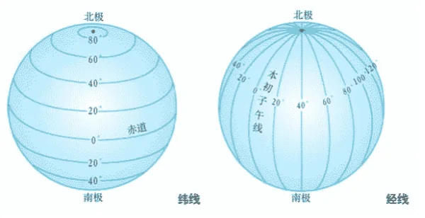

📌定位技术
术语
- 单词：latitude维度，江苏地界大概范围 3x.983724
- 单词：longitude经度，江苏地界大概范围 1xx.260401

参考案例
饿了么移动
美团PC端
卖座网
-方案1：HTML5 Geolocation 地理定位 API
手册：https://www.runoob.com/html/html5-geolocation.html
问题：不稳定、误差大
原理：https://www.zhihu.com/question/20473051
-方案2：使用第三方地图提供的API
其他：腾讯地图计算两点之间距离